<title>María Méndez — BioLiving</title>
<meta name="viewport" content="width=device-width, initial-scale=1.0">
<link rel="icon" type="image/png" href="assets/favicon.png">

<link rel="stylesheet" href="styles/variables.css">
<link rel="stylesheet" href="styles/base.css">
<link rel="stylesheet" href="styles/components.css">
<link rel="stylesheet" href="styles/page-project.css">

<!-- ─── NAV ─────────────────────────────────────────────────── -->
<nav class="comp-nav page-project--packaging">
  <a class="comp-nav__logo" href="work.html">Maria Mendez</a>
  <ul class="comp-nav__links">
    <li class="is-active"><a href="work.html">Work</a></li>
    <li><a href="about.html">About</a></li>
    <li data-placeholder>Shop</li>
    <li><a href="contact.html">Contact</a></li>
  </ul>
  <div class="comp-nav__dot"></div>
</nav>

<!-- ─── PAGE ─────────────────────────────────────────────────── -->
<main class="page-project page-project--packaging">

  <!-- PROJECT HEADER -->
  <header class="project-header">

    <div class="project-header__left">
      <p class="project-category">Packaging · 2024</p>
      <h1 class="project-title">BioLiving</h1>
      <div class="comp-spec-sheet">
        <div class="spec-item">
          <div class="spec-label">Client</div>
          <div class="spec-value">BioLiving</div>
        </div>
        <div class="spec-item">
          <div class="spec-label">Discipline</div>
          <div class="spec-value">Desarrollo visual, Brand Identity &amp; Packaging Design</div>
        </div>
        <div class="spec-item">
          <div class="spec-label">Year</div>
          <div class="spec-value">2024</div>
        </div>
      </div>
    </div>

    <div class="project-header__right">
      <p class="project-desc">Desarrollo visual e identidad para una marca innovadora de suplementos de alta calidad. Cada suplemento parte de un animal y del ecosistema que lo rodea, tomando sus características y propiedades como punto de partida para construir la identidad de cada producto. El concepto conecta los beneficios que encontramos en la naturaleza con las propiedades de cada suplemento, creando un vínculo visual y conceptual entre el producto y su origen natural.</p>
      <p class="project-desc project-desc--secondary">A partir de este concepto se desarrolló un sistema visual basado en una paleta cromática amplia, asignando dos o tres tonos a cada producto para hacerlo reconocible dentro de la colección. El sistema se extendió posteriormente al packaging, campañas, redes sociales y diferentes aplicaciones de marca.</p>
    </div>

  </header>

  <!-- GALLERY — Layout B only -->
  <section class="comp-gallery-interactive">

    <div class="comp-drag-hint" id="dragHint">Move to Explore →</div>

    <div class="gallery-canvas" id="galleryCanvas">

      <div class="gallery-piece gp-1" data-rotation="-2.5">
        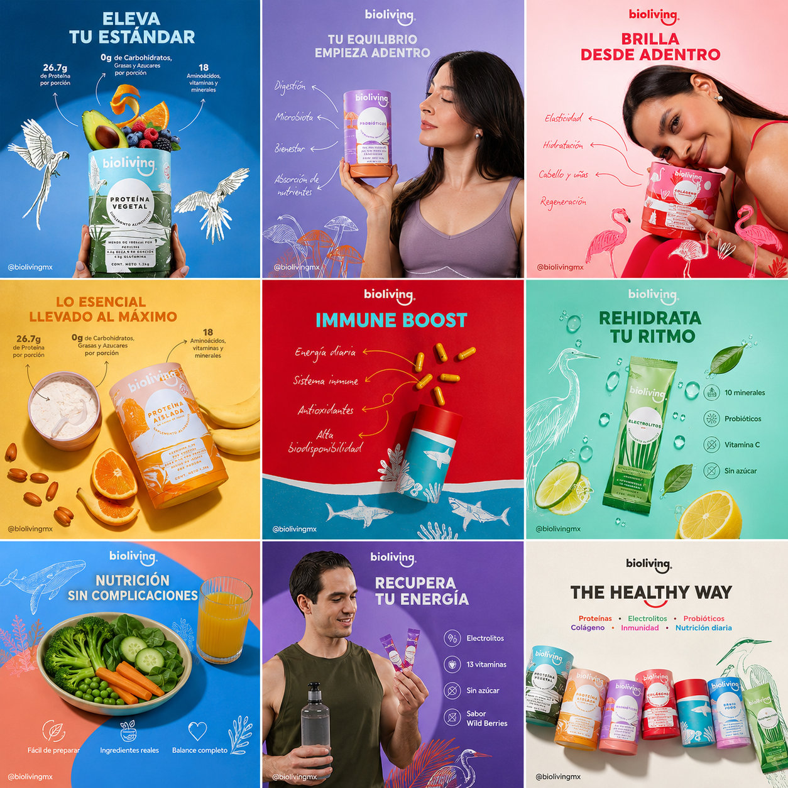
      </div>

      <div class="gallery-piece gp-2" data-rotation="3.2">
        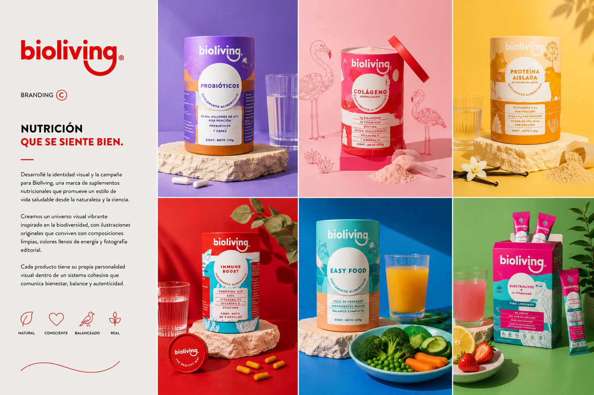
      </div>

      <div class="gallery-piece gp-3" data-rotation="-0.8">
        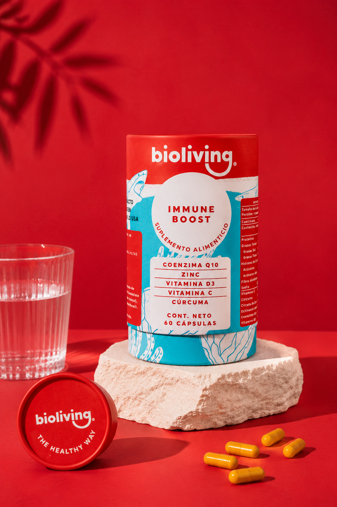
      </div>

      <div class="gallery-piece gp-4" data-rotation="4.5">
        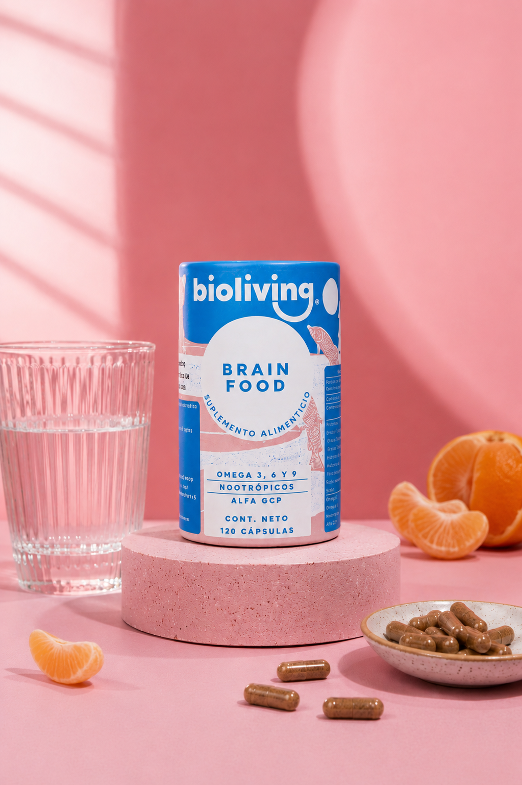
      </div>

      <div class="gallery-piece gp-5" data-rotation="1.8">
        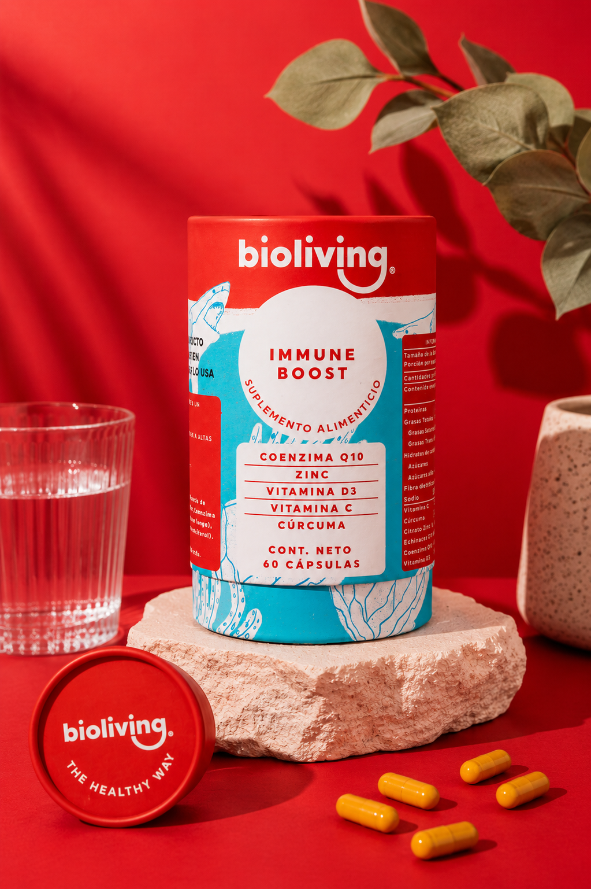
      </div>

      <div class="gallery-piece gp-6" data-rotation="-4.2">
        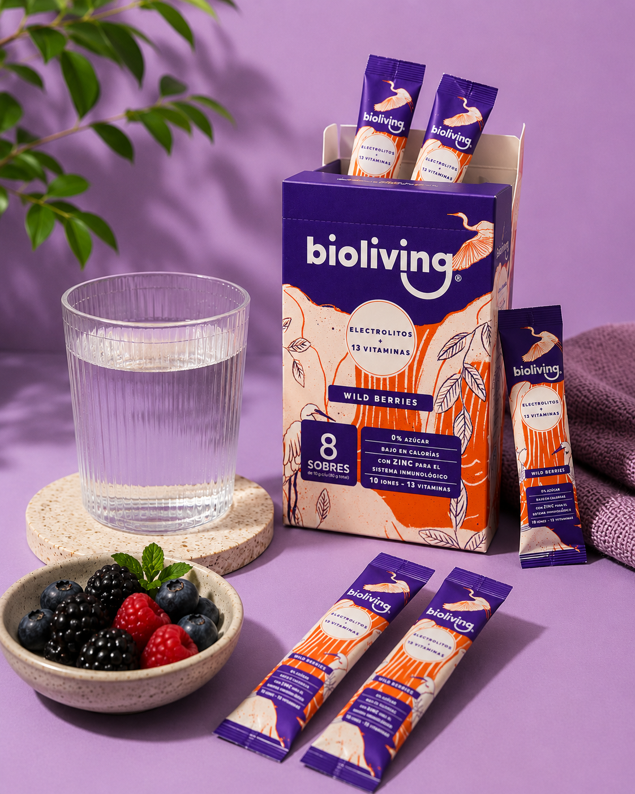
      </div>

      <div class="gallery-piece gp-7" data-rotation="2.7">
        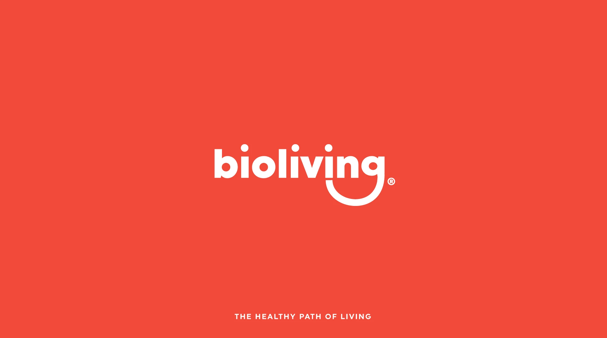
      </div>

      <div class="gallery-piece gp-8" data-rotation="-1.5">
        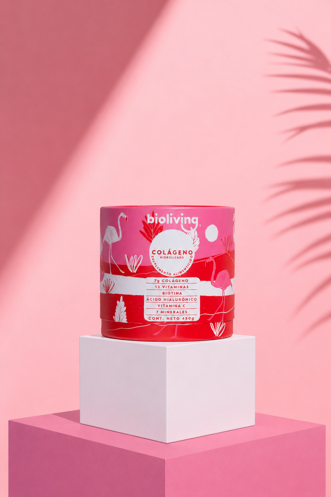
      </div>

      <div class="gallery-piece gp-9" data-rotation="2.1">
        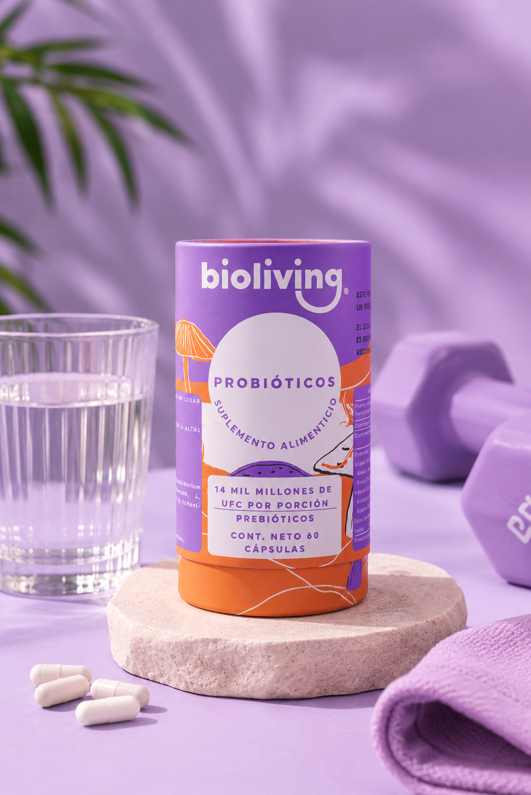
      </div>

      <div class="gallery-piece gp-10" data-rotation="-3.6">
        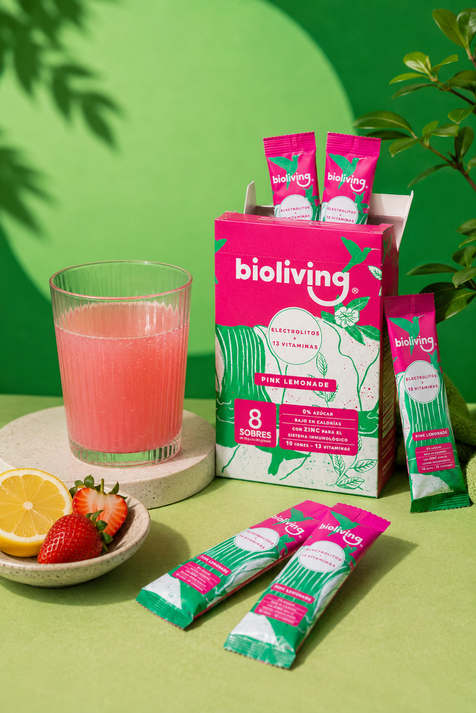
      </div>

      <div class="gallery-piece gp-11" data-rotation="1.4">
        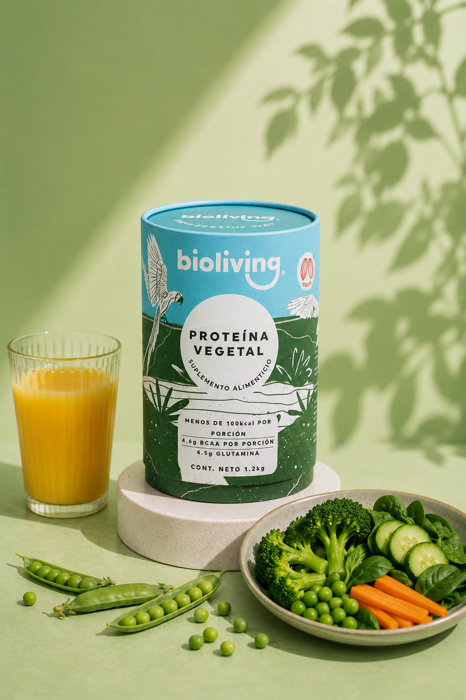
      </div>

    </div>
  </section>

</main>

<script src="scripts/gallery.js"></script>
